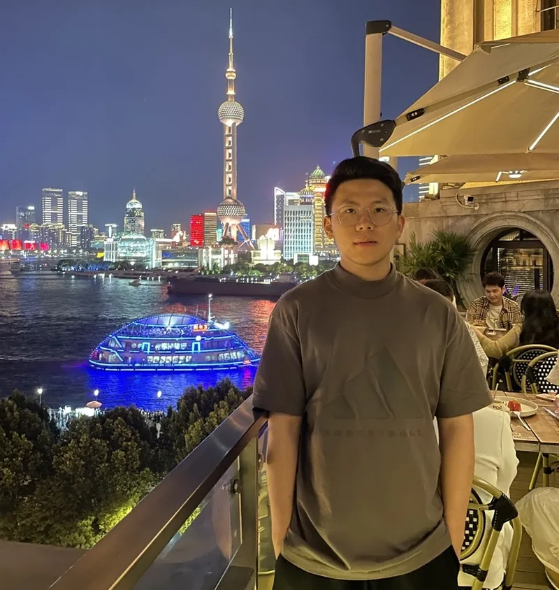
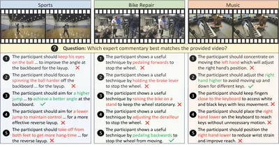
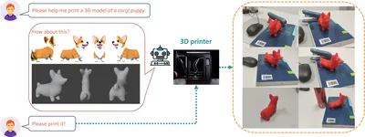
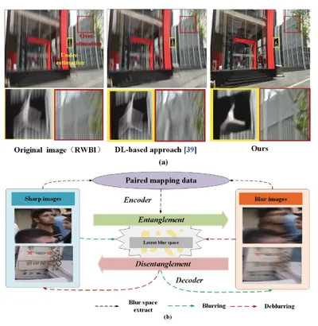
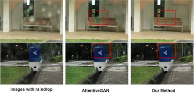

Han Yi
Hello! I am currently a second-year CS PhD student at the University of North Carolina at Chapel
Hill (UNC), under the guidance of Prof. Gedas
Bertasius. I completed my Master's degree at the National University of Singapore (NUS) in
2024. During my time at NUS, I also served as a research intern at the NExT++ Research Center,
where I was advised by Prof. Tat-Seng
Chua, Prof. Zhedong Zheng, and Prof. Xiangyu Xu.
I love basketball, football, rap music, and fitness.
I am looking for a summer 2027 research internship (May–Aug.
2027).
Email /
CV /
Google Scholar
/
Github
|

|
Research
I'm broadly interested in advanced Computer Vision and Multi-modal Learning, with a focus on both
the fine-grained understanding and generation of complex human actions. I also work on leveraging
foundation models (LLMs, VLMs, etc.) to solve multiple video understanding tasks.
|
News
- 2026 SVI-Bench is accepted to ECCV 2026.
- 2026 Progressive Text-to-3D Generation is accepted to
ACM TOMM.
- 2026 Co-organized the T4V
Workshop at CVPR 2026.
- 2025 ExAct is accepted to NeurIPS 2025.
- 2024 Received the Outstanding Reviewer Award at ACM
Multimedia 2024.
|
|
|
SVI-Bench: A Dynamic Microworld for Strategic Video Intelligence
Yulu Pan*, Han Yi*, Seongsu Ha*, Md Mohaiminul Islam*, Benjamin Zhang, Lorenzo Torresani,
Gedas Bertasius
*Equal contribution
ECCV, 2026
Project Page
/
Paper
/
Extended
Paper
/
Code
/
Data
SVI-Bench is a unified benchmark for evaluating the full cognitive stack of video intelligence —
perception, reasoning, simulation, and agency. Built on 35,000 hours of broadcast basketball,
soccer, and hockey footage, it shows that while models handle perception well, reasoning,
simulation, and agency are where current systems break down.
|
|

|
ExAct: A Video-Language Benchmark for Expert Action Analysis
Han Yi, Yulu Pan, Feihong He, Xinyu Liu, Benjamin Zhang, Oluwatumininu Oguntola, Gedas
Bertasius
NeurIPS, 2025
Project
Page
/
Paper
/
Data
We introduce ExAct, a video-language benchmark for expert-level analysis of skilled human
actions. It contains over 3,500 expert-curated video QA pairs across domains like sports, cooking,
and music. Our benchmark reveals a significant performance gap between state-of-the-art VLMs and
human experts, highlighting the need for models with a more nuanced understanding of complex human
skills.
|
|

|
Progressive Text-to-3D Generation for Automatic 3D Prototyping
Han Yi, Zhedong Zheng, Xiangyu Xu, Tat-Seng Chua
ACM Transactions on Multimedia Computing, Communications and Applications (TOMM), 2026
Paper
A progressive strategy that learns text-to-3D in a coarse-to-fine manner.
|
|

|
Image Deblurring With Image Blurring
Ziyao Li, Zhi Gao, Han Yi, Yu Fu, Boan Chen
IEEE Transactions on Image Processing (TIP), 2023
Paper
Proposed a novel motion deblurring framework using Blur Space Disentangled Network (BSDNet) and
Hierarchical Scale-recurrent Deblurring Network (HSDNet) to effectively address real-world blur,
achieving state-of-the-art results.
|
|

|
Single image deraindrop leveraging luminance priors and context
aggregation
Yi Liu, Zhi Gao, Tiancan Mei, Han Yi
Neurocomputing, 2024
Paper
Developed a recurrent single-image deraindrop approach utilizing luminance priors and contextual
feature aggregation, achieving superior performance in restoring color and texture consistency.
|
Experience
- Tencent Games, Research Intern
Jan. 2024 – Jun. 2024
- NExT++ Research Center, NUS, Research Assistant
Dec. 2022 – Sep. 2023
- Wuhan University, Research Assistant
Nov. 2021 – Oct. 2022
- Tsinghua University, Research Assistant
Jul. 2021 – Sep. 2021
|
|
{kind=link}